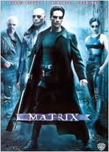
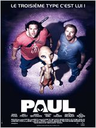
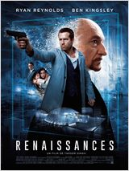

19 décembre
14h - Matrix
Synopsis
Programmeur anonyme dans un service administratif le jour, Thomas Anderson devient Neo la nuit venue.
Sous ce pseudonyme, il est l'un des pirates les plus recherchés du cyber-espace.
A cheval entre deux mondes, Neo est assailli par d'étranges songes et des messages cryptés provenant d'un certain Morpheus.
Celui-ci l'exhorte à aller au-delà des apparences et à trouver la réponse à la question qui hante constamment ses pensées :
qu'est-ce que la Matrice ? Nul ne le sait, et aucun homme n'est encore parvenu à en percer les defenses.
Mais Morpheus est persuadé que Neo est l'Elu, le libérateur mythique de l'humanité annoncé selon la prophétie.
Ensemble, ils se lancent dans une lutte sans retour contre la Matrice et ses terribles agents...
Réalisé par : Lana Wachowski
Andy Wachowski
Avec : Keanu Reeves, Laurence Fishburne, Carrie-Anne Moss
Date de Sortie : 23 Juin 1999
Durée : 2 h 15 min
Bande annonce VF
17h - Paul
Synopsis
Depuis 60 ans, Paul, un extraterrestre, vit sur terre et collabore avec le gouvernement américain. Il se cache à l'abri des regards dans une base militaire ultra secrète... Paul est à l'origine de tout ce qu’on a pu imaginer sur les extraterrestres, du merchandising aux scénarios de Rencontres du troisième type , E.T. ou encore X Files. Hélas pour lui, maintenant que le gouvernement américain lui a soutiré toutes les informations intéressantes sur la vie extraterrestre, il décide de se débarrasser de lui. Paul réussit alors à s'échapper et tombe nez à nez avec deux adolescents attardés fans de science-fiction qui sillonnent les États-Unis en camping car. Paul les convainc de l'emmener avec eux et de l'aider à quitter la terre. La tâche s’avère d'autant plus difficile pour nos deux "héros du dimanche" qui sont poursuivis par un flic implacable assisté de deux pieds nickelés du FBI...
Réalisé par : Greg Mottola
Avec :
Simon Pegg, Nick Frost, Philippe Manoeuvre
Date de sortie : 2 Mars 2011
Durée : 1 h 42 min
Bande annonce VF
20h - Avatar
Synopsis
Malgré sa paralysie, Jake Sully, un ancien marine immobilisé dans un fauteuil roulant, est resté un combattant au plus profond de son être.
Il est recruté pour se rendre à des années-lumière de la Terre, sur Pandora, où de puissants groupes industriels exploitent un minerai rarissime destiné à résoudre la crise énergétique sur Terre.
Parce que l'atmosphère de Pandora est toxique pour les humains, ceux-ci ont créé le Programme Avatar, qui permet à des " pilotes " humains de lier leur esprit à un avatar, un corps biologique commandé à distance, capable de survivre dans cette atmosphère létale.
Ces avatars sont des hybrides créés génétiquement en croisant l'ADN humain avec celui des Na'vi, les autochtones de Pandora.
Sous sa forme d'avatar, Jake peut de nouveau marcher. On lui confie une mission d'infiltration auprès des Na'vi, devenus un obstacle trop conséquent à l'exploitation du précieux minerai.
Mais tout va changer lorsque Neytiri, une très belle Na'vi, sauve la vie de Jake...
Réalisé par : James Cameron
Avec :
Sam Worthington, Zoe Saldana, Sigourney Weaver
Date de sortie : 16 décembre 2009
Durée : 2 h 42 min
Bande annonce VF
23h - Renaissance
Synopsis
Que feriez-vous si on vous proposait de vivre éternellement ?
Damian Hale, un richissime homme d’affaire new yorkais atteint d’une maladie incurable,
se voit proposer une opération révolutionnaire par le mystérieux groupe Phénix :
transférer son esprit dans un corps de substitution, « une enveloppe vide »,
un nouveau corps jeune et athlétique pour prolonger sa vie. Comment résister à une telle proposition ?
Damian Hale procède au transfert et redcouvre les joies de la jeunesse, du luxe et des femmes dans son nouveau corps.
Jusqu’au jour où Damian découvre un terrible secret sur l’opération.
Un secret pour lequel Phénix est prêt à tuer.
Réalisé par : Tarsem Singh
Avec :
Ryan Reynolds, Ben Kingsley, Natalie Martinez
Date de sortie : 29 jullleet 2015
Durée : 1 h 58 min